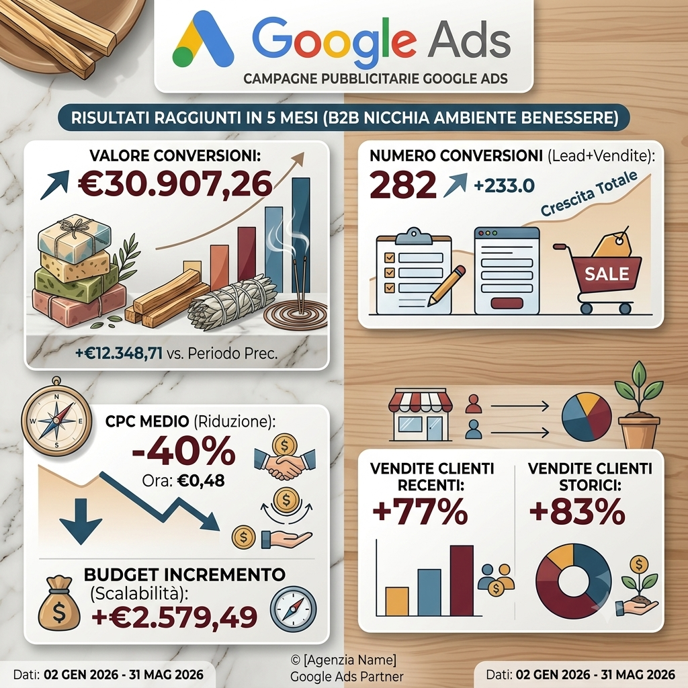
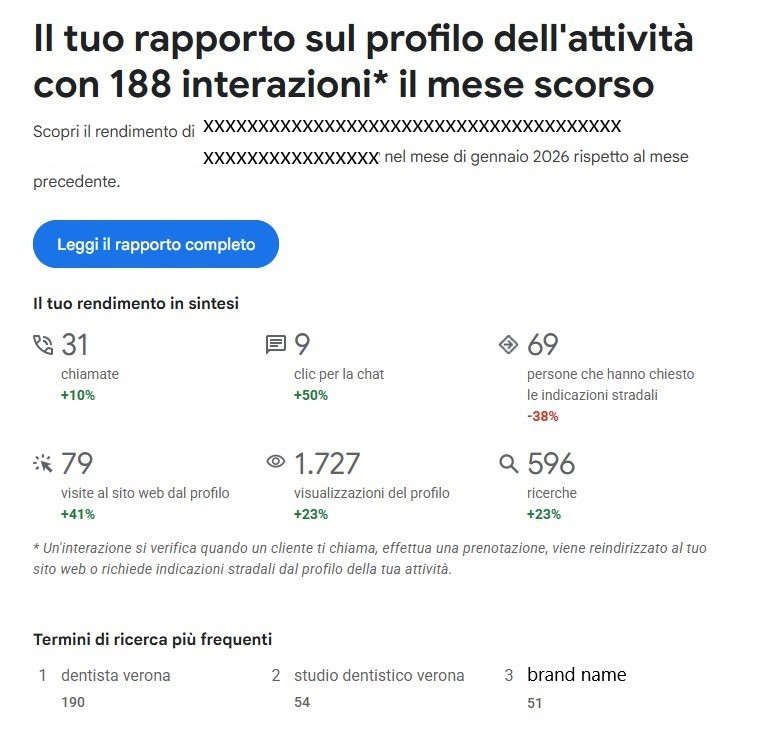
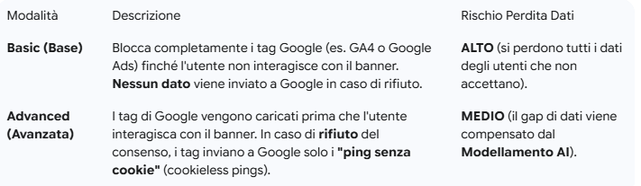
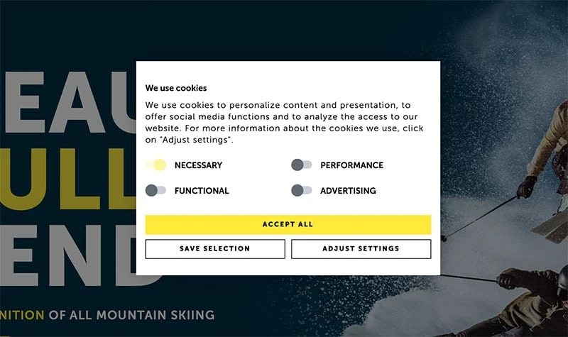
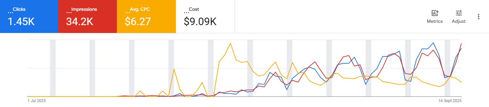
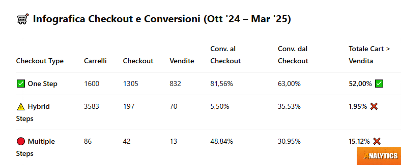
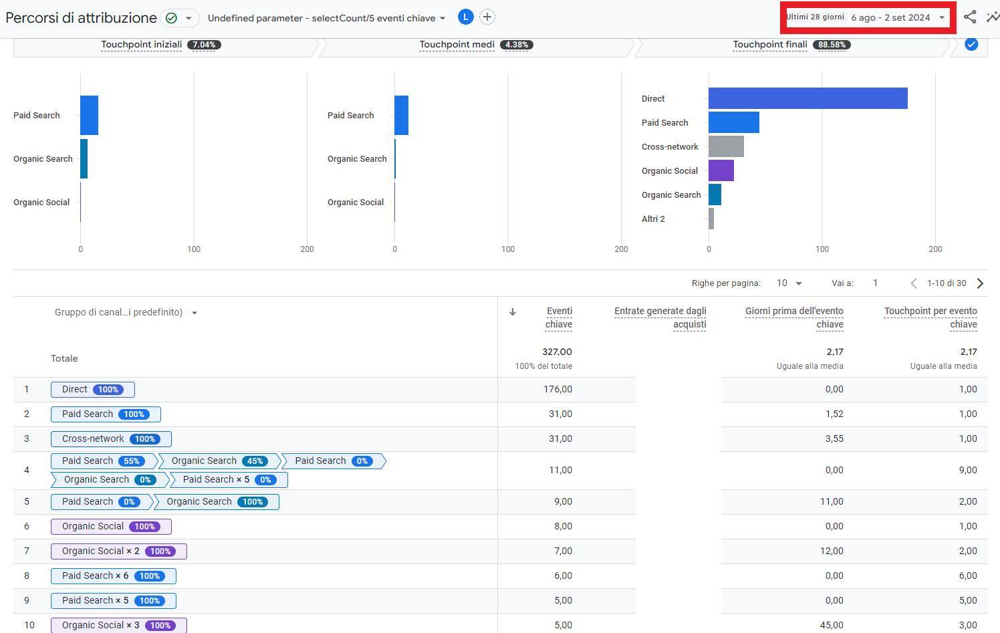

Blog & Insights

Lead Generation B2B nel Settore Salute e Benessere: Come Ottimizzare Google Ads per Risultati Reali
Vuoi trasformare la tua strategia B2B? Scopri come abbiamo ottimizzato il tracciamento lead, ridotto il CPC del 40% e incrementato il fatturato nel settore benessere. Caso studio completo.

Budget Google Ads: perché i consigli di Google non sempre portano risultati
Google consiglia un budget, ma è sempre sufficiente? Un caso reale spiega perché anche con campagne ben fatte 300–500€ al mese possono non bastare per vendere online.

Google Maps e Profilo dell’Attività: Come Trasformare le Ricerche Locali in Nuovi Clienti (Case Study)
Scopri come una corretta gestione del Profilo Google Maps ha portato a un +50% di chat e un aumento costante di chiamate e visite al sito. Leggi il nostro Case Study 2026.
🌿 Rivoluzione Verde nel B2B: Strategie di Lead Generation per Aziende di Certificazione Ambientale e Finanziamenti
Vuoi intercettare aziende interessate alla certificazione ambientale e ai bandi europei? Leggi la nostra analisi su come l'ottimizzazione SEO e Google Ads garantisce lead B2B di alta qualità.

Ristrutturazione Strategica Google Ads: Oltre 81K Vendite e ROAS in Crescita. Il Segreto per E-commerce e Aziende nell'Era dell'Intelligenza Artificiale
Agenzia Google Ads? Scopri la strategia che ha generato 81.1K Vendite e ROAS 6.66. Focus su Feed Merchant Center, CPA target e Campagne AI-Friendly per la tua crescita.

Google Consent Mode V2 : Guida Obbligatoria per Conformità GDPR, GTM e GA4
Da marzo 2024, il Consent Mode V2 è vitale. Scopri i parametri ad_user_data e ad_personalization, le differenze tra Basic e Advanced e come salvare i tuoi dati in GA4.

Banner Cookie e Consent Mode: La Guida Completa per il Tuo Sito Web
Il tuo banner cookie è obsoleto? Impara a riconoscere un sistema a norma e sfrutta la Consent Mode di Google per mantenere l'efficienza del tuo marketing digitale. Guida per professionisti e uffici tecnici.

Analisi di una Campagna Google Ads Grant: Strategia, Pazienza e Risultati Concreti
Scopri i segreti del successo con Google Ads Grant. Il nostro articolo spiega come superare le difficoltà iniziali e usare test A/B per trasformare i crediti gratuiti in clic, impressioni e conversioni concrete per la tua associazione.

Come Abbassare il CPA Target per Aumentare i Profitti: Un Caso Studio "Out of the Box"
Scopri come la nostra agenzia di web marketing ha aiutato un cliente ad aumentare i profitti abbassando il CPA target. La chiave del successo è la strategia, non solo un ROAS elevato. Scopri come funziona la pubblicità efficace su Google Ads e perché

Massimizza il tuo Successo con Google Ads, Analytics e Merchant Center
Scopri i servizi di Analytics 4 per ottimizzare le tue campagne Google Ads, Google Analytics e Google Merchant Center. Offriamo setup, analisi dati, tracciamenti accurati, gestione campagne e supporto dedicato. Soluzioni personalizzate per il success
Massimizza il tuo Successo con Google Ads, Analytics e Merchant Center
Hai bisogno di un'agenzia di web marketing che gestisca le tue pubblicità su Google? Contattaci, prezzi e condizioni in chiaro.
E-commerce e dropshipping
Il grafico mostra l'andamento delle vendite di un e-commerce in dropshipping. Si evidenzia una riduzione del CPA target da 24€ a meno di 10€, mantenendo un ROAS superiore al 900%.

Checkout e-commerce: quale converte di più? Analisi reale sui dati 2024-2025
Scopri quale checkout e-commerce converte di più. Analisi dati 2024-2025, confronto tra One Step, Hybrid e Multiple Steps con consigli pratici.

Lead Generation: Quando l'Investimento Ripaga. Un Caso di Studio da 206K Clic e un ROI Eccezionale
Scopri come un'azienda che vive di appuntamenti ha scalato il budget da €2K a €20K al mese in soli 3 mesi. Analizziamo i pilastri del successo: gestione parole chiave, segmentazione pubblico e UX per la lead generation.

Google Ads e Meta: spreco di soldi o investimento strategico? Analisi reale sui percorsi di attribuzione
Scopri con dati reali se Google Ads e Meta sprecano soldi o sono fondamentali per le conversioni. Analisi touchpoint, esempi e consigli pratici.